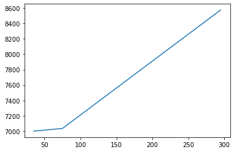
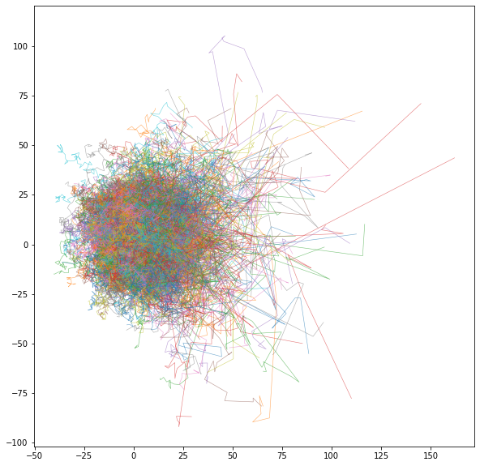
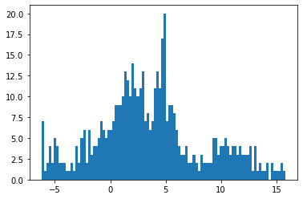

Introduction to Simpy#
Simpy is a Python library for the simulation of systems that interact through discrete events. There are two essential to using Simpy:
The simulation environment that manages the simulation.
Processes you create to model system behavior.
This notebook introduces these concepts using a toy example.
Creating a simulation environment#
A simulation environment is created with simpy.Environment(). The resulting object provides a collection of methods for setting and controlling a simulation.
import simpy
env = simpy.Environment()
print("time = ", env.now)
env.run()
time = 0
That’s all it takes to create and run a simulation. But we didn’t give the simulation anything to do, so there are no details to report.
Creating simulation processes#
System behavior is modeled as a system of Simpy processes. Processes are implemented with the Python yield statement, and attached to the simulation environment with env.process().
A process communicates with the simulation environment through the yield statement. The yield statement sends an event back to the simulation environment. The the passage of time is modeled with env.timeout(delay) event.
import simpy
# a python generator
def print_msg():
yield env.timeout(1.0)
print("time =", env.now, ": Hello, World.")
# create a simulation environment
env = simpy.Environment()
# use a generator to create a simpy process
env.process(print_msg())
# run the simulation
env.run()
time = 1.0 : Hello, World.
The generator may include parameters to create unique instances. This is the foundation of “agent-based” modeling.
import simpy
# modify the generator to include parameters
def print_msg(delay, msg):
yield env.timeout(delay)
print(f"time {delay}: {msg}")
# create a simulation environment
env = simpy.Environment()
# create multiple, unique instances of the process model
env.process(print_msg(3.0, "Hello, World."))
env.process(print_msg(1.0, "Hello, Indiana."))
env.process(print_msg(2.0, "Hello, Notre Dame."))
# run the simulation
env.run()
time 1.0: Hello, Indiana.
time 2.0: Hello, Notre Dame.
time 3.0: Hello, World.
Note that the simulation environment correctly orders the events!
Events#
Simpy includes many different event types that are managed by the simulation environment. The env.timeout(delay) demonstrated above is a mainstay in Simpy models. Many applications require nothing more.
import simpy
# modify the generator to include parameters
def print_msg(delay, msg):
yield env.timeout(delay)
print(f"time {delay}: {msg}")
# print message when a list of processes have completed
def final_msg(msg, list_of_processes):
yield simpy.AllOf(env, list_of_processes)
print(env.now, msg)
# create a simulation environment
env = simpy.Environment()
# create multiple, unique instances of the process model
a = env.process(print_msg(3.0, "Hello, World."))
b = env.process(print_msg(1.0, "Hello, Indiana."))
c = env.process(print_msg(2.0, "Hello, Notre Dame."))
env.process(final_msg("All done", [a, b, c]))
# run the simulation
env.run()
time 1.0: Hello, Indiana.
time 2.0: Hello, Notre Dame.
time 3.0: Hello, World.
3.0 All done
What we observe is that the simulation environment is scheduling tasks and executng them in a time ordered sequence, not the order in which they are created.
Study Question: Use simpy.AnyOf(env, events) to produce a message when the first process has completed.
Ready to Roomba#
import simpy
def roomba(name):
print(f"{env.now:3d}: {name} starts cleaning.")
yield env.timeout(20)
print(f"{env.now:3d}: {name} battery dies.")
env = simpy.Environment()
env.process(roomba("A"))
env.run()
0: A starts cleaning.
20: A battery dies.
import simpy
import matplotlib.pyplot as plt
total_cleaning_time = 0
cleaning = {}
def roomba(name, battery):
global cleaning, total_cleaning_time
while True:
start = env.now
#print(f"{start:3d}: {name} starts cleaning.")
yield env.timeout(battery)
stop = env.now
#print(f"{stop:3d}: {name} stops cleaning.")
total_cleaning_time = total_cleaning_time + stop - start
cleaning[env.now] = total_cleaning_time
request = charger.request()
yield request
print(f"{env.now:3d}: {name} start charging.")
yield env.timeout(5)
print(f"{env.now:3d}: {name} finished charging.")
charger.release(request)
env = simpy.Environment()
charger = simpy.Resource(env, capacity=1)
for n in range(200):
env.process(roomba(n, 35))
env.run(until=300)
print(cleaning)
plt.plot(cleaning.keys(), cleaning.values())
35: 0 start charging.
40: 0 finished charging.
40: 1 start charging.
45: 1 finished charging.
45: 2 start charging.
50: 2 finished charging.
50: 3 start charging.
55: 3 finished charging.
55: 4 start charging.
60: 4 finished charging.
60: 5 start charging.
65: 5 finished charging.
65: 6 start charging.
70: 6 finished charging.
70: 7 start charging.
75: 7 finished charging.
75: 8 start charging.
80: 8 finished charging.
80: 9 start charging.
85: 9 finished charging.
85: 10 start charging.
90: 10 finished charging.
90: 11 start charging.
95: 11 finished charging.
95: 12 start charging.
100: 12 finished charging.
100: 13 start charging.
105: 13 finished charging.
105: 14 start charging.
110: 14 finished charging.
110: 15 start charging.
115: 15 finished charging.
115: 16 start charging.
120: 16 finished charging.
120: 17 start charging.
125: 17 finished charging.
125: 18 start charging.
130: 18 finished charging.
130: 19 start charging.
135: 19 finished charging.
135: 20 start charging.
140: 20 finished charging.
140: 21 start charging.
145: 21 finished charging.
145: 22 start charging.
150: 22 finished charging.
150: 23 start charging.
155: 23 finished charging.
155: 24 start charging.
160: 24 finished charging.
160: 25 start charging.
165: 25 finished charging.
165: 26 start charging.
170: 26 finished charging.
170: 27 start charging.
175: 27 finished charging.
175: 28 start charging.
180: 28 finished charging.
180: 29 start charging.
185: 29 finished charging.
185: 30 start charging.
190: 30 finished charging.
190: 31 start charging.
195: 31 finished charging.
195: 32 start charging.
200: 32 finished charging.
200: 33 start charging.
205: 33 finished charging.
205: 34 start charging.
210: 34 finished charging.
210: 35 start charging.
215: 35 finished charging.
215: 36 start charging.
220: 36 finished charging.
220: 37 start charging.
225: 37 finished charging.
225: 38 start charging.
230: 38 finished charging.
230: 39 start charging.
235: 39 finished charging.
235: 40 start charging.
240: 40 finished charging.
240: 41 start charging.
245: 41 finished charging.
245: 42 start charging.
250: 42 finished charging.
250: 43 start charging.
255: 43 finished charging.
255: 44 start charging.
260: 44 finished charging.
260: 45 start charging.
265: 45 finished charging.
265: 46 start charging.
270: 46 finished charging.
270: 47 start charging.
275: 47 finished charging.
275: 48 start charging.
280: 48 finished charging.
280: 49 start charging.
285: 49 finished charging.
285: 50 start charging.
290: 50 finished charging.
290: 51 start charging.
295: 51 finished charging.
295: 52 start charging.
{35: 7000, 75: 7035, 80: 7070, 85: 7105, 90: 7140, 95: 7175, 100: 7210, 105: 7245, 110: 7280, 115: 7315, 120: 7350, 125: 7385, 130: 7420, 135: 7455, 140: 7490, 145: 7525, 150: 7560, 155: 7595, 160: 7630, 165: 7665, 170: 7700, 175: 7735, 180: 7770, 185: 7805, 190: 7840, 195: 7875, 200: 7910, 205: 7945, 210: 7980, 215: 8015, 220: 8050, 225: 8085, 230: 8120, 235: 8155, 240: 8190, 245: 8225, 250: 8260, 255: 8295, 260: 8330, 265: 8365, 270: 8400, 275: 8435, 280: 8470, 285: 8505, 290: 8540, 295: 8575}
[<matplotlib.lines.Line2D at 0x7fabc605dee0>]

Chemotaxis#
%matplotlib inline
import matplotlib.pyplot as plt
import numpy as np
import simpy
track = {}
x_max = 10.0
y_max = 10.0
dt = 2
v = 0.2
# concentration gradient
def c(x, y):
return 0.01*x + 0.10
# agent model
def agent(n, x, y):
track[n] = {(x, y)}
s = 0
a = np.random.uniform(0, 2*np.pi)
vx, vy = v*np.cos(a), v*np.sin(a)
while True:
yield env.timeout(dt)
dx = vx*dt
dy = vy*dt
x += dx
y += dy
log[n][env.now] = (x, y)
p = np.random.uniform()
if p <= 1.0*c(x,y)/(1 + c(x,y)):
s = 0
else:
s += np.sqrt(dx**2 + dy**2)
if s >= 2.0:
s = 0
a = np.random.uniform(0, 2*np.pi)
vx, vy = v*np.cos(a), v*np.sin(a)
env = simpy.Environment()
for n in range(1000):
env.process(agent(n, np.random.uniform(0, x_max), np.random.uniform(0, y_max)))
env.run(until=1000)
fig, ax = plt.subplots(1, 1, figsize=(10, 10))
for n in log.keys():
pos = log[n].values()
ax.plot([x for x,y in pos], [y for x,y in pos], lw=0.6, alpha=0.6)
ax.axis('equal')
ax.axis('square')
(-50.40269074821132,
172.2475489109109,
-102.09903103792954,
120.55120862119267)

plt.hist([x for x,y in pos], bins = 100);
